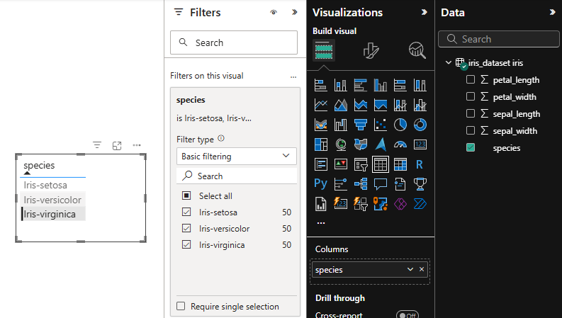
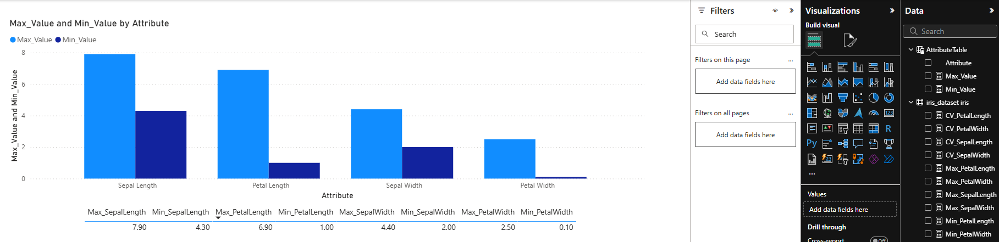
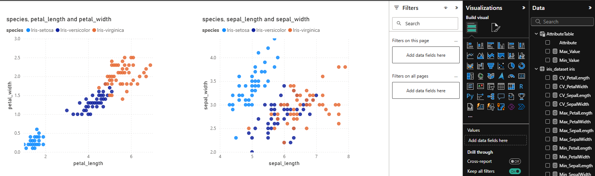
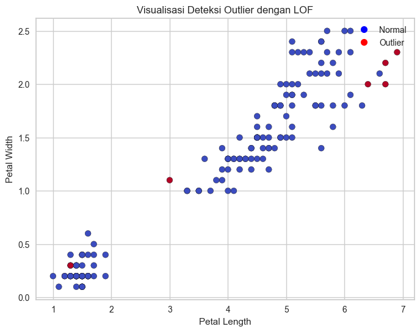

Eksplorasi Data#
1. Statistik Deskriptif Dasar#
1.1 Jumlah Setiap Kelas#

Hasil:
Iris-setosa: 50 sampel (33.33%)
Iris-versicolor: 50 sampel (33.33%)
Iris-virginica: 50 sampel (33.33%)
Insight: Dataset perfectly balanced - tidak ada bias kelas, ideal untuk machine learning.
1.2 Min-Max Setiap Kolom#

Hasil Analisis:
sepal_length: 4.3 - 7.9 cm (range: 3.6 cm)
sepal_width: 2.0 - 4.4 cm (range: 2.4 cm)
petal_length: 1.0 - 6.9 cm (range: 5.9 cm)
petal_width: 0.1 - 2.5 cm (range: 2.4 cm)
Insight: Petal length memiliki variasi terbesar (5.9 cm), menunjukkan karakteristik yang paling beragam antar spesies.
1.3 Outlayer#

1. Petal Length vs Petal Width
Grafik kiri menunjukkan hubungan antara petal_length dan petal_width.
Setiap spesies iris (setosa, versicolor, virginica) terpisah jelas, terutama iris-setosa di kiri bawah.
Fitur petal sangat baik untuk membedakan spesies karena sebaran datanya tidak saling tumpang tindih.
2. Sepal Length vs Sepal Width
Grafik kanan menunjukkan hubungan antara sepal_length dan sepal_width.
Distribusi antar spesies lebih tumpang tindih, sehingga lebih sulit membedakan satu sama lain.
Fitur sepal kurang efektif untuk klasifikasi dibandingkan petal.
Kesimpulan:
Petal length dan petal width merupakan fitur terbaik untuk klasifikasi spesies iris, sedangkan sepal length dan sepal width kurang optimal.
1.4 Tabel Ringkasan Statistik Lengkap#
Statistik |
sepal_length |
sepal_width |
petal_length |
petal_width |
|---|---|---|---|---|
Mean/Rata-Rata |
5.84 |
3.05 |
3.76 |
1.20 |
Median |
5.80 |
3.00 |
4.35 |
1.30 |
Std Dev |
0.83 |
0.43 |
1.76 |
0.76 |
Variance |
0.69 |
0.19 |
3.09 |
0.58 |
Min |
4.30 |
2.00 |
1.00 |
0.10 |
Max |
7.90 |
4.40 |
6.90 |
2.50 |
Range |
3.60 |
2.40 |
5.90 |
2.40 |
1.4.1 Rata-rata Setiap Kolom#
Hasil Analisis:
sepal_length: ~5.84 cm
sepal_width: ~3.05 cm
petal_length: ~3.76 cm
petal_width: ~1.20 cm
Insight: Sepal umumnya lebih besar dari petal, dengan width selalu lebih kecil dari length.
1.4.2 Median Setiap Kolom#
Hasil Analisis:
sepal_length: ~5.80 cm (mendekati mean, distribusi simetris)
sepal_width: ~3.00 cm (mendekati mean, distribusi normal)
petal_length: ~4.35 cm (lebih besar dari mean, skew ke kiri)
petal_width: ~1.30 cm (lebih besar dari mean, skew ke kiri)
Insight: Petal measurements cenderung skewed karena perbedaan besar antara Iris-setosa dengan spesies lainnya.
1.4.3 Standard Deviasi Setiap Kolom#
Hasil Analisis:
sepal_length: ~0.83 cm (variabilitas sedang)
sepal_width: ~0.43 cm (variabilitas rendah)
petal_length: ~1.76 cm (variabilitas tinggi)
petal_width: ~0.76 cm (variabilitas sedang-tinggi)
Insight: Petal length memiliki variabilitas tertinggi, mengkonfirmasi bahwa ini adalah feature yang paling diskriminatif.
1.4.4 Variance Setiap Kolom#
Hasil Analisis:
sepal_length: ~0.69 cm² (variance sedang)
sepal_width: ~0.19 cm² (variance rendah)
petal_length: ~3.10 cm² (variance tertinggi)
petal_width: ~0.58 cm² (variance sedang)
Insight: Variance menguatkan temuan bahwa petal length memiliki dispersi data terbesar antar spesies.
2. Outlier Detection#
import pandas as pd
from pycaret.anomaly import *
import matplotlib.pyplot as plt
2.1 ABOD (Angle-base Outlier Detection)#
2.1.1 Menyiapkan model (ABOD)#
data = pd.read_csv("../IRIS.csv")
data = data.drop(columns=["species"])
s = setup(data)
abod = create_model('abod', fraction=0.05)
results = assign_model(abod)
results_sorted = results.sort_values(by="Anomaly", ascending=False)
| Description | Value | |
|---|---|---|
| 0 | Session id | 1393 |
| 1 | Original data shape | (150, 4) |
| 2 | Transformed data shape | (150, 4) |
| 3 | Numeric features | 4 |
| 4 | Preprocess | True |
| 5 | Imputation type | simple |
| 6 | Numeric imputation | mean |
| 7 | Categorical imputation | mode |
| 8 | CPU Jobs | -1 |
| 9 | Use GPU | False |
| 10 | Log Experiment | False |
| 11 | Experiment Name | anomaly-default-name |
| 12 | USI | e1fe |
2.1.2 Ringkasan hasil outlier detection (tampilkan 10 baris pertama)#
print("Ringkasan Hasil Outlier Detection (10 baris pertama):")
results_sorted[['sepal_length','sepal_width','petal_length','petal_width','Anomaly','Anomaly_Score']].head(10)
Ringkasan Hasil Outlier Detection (10 baris pertama):
| sepal_length | sepal_width | petal_length | petal_width | Anomaly | Anomaly_Score | |
|---|---|---|---|---|---|---|
| 131 | 7.9 | 3.8 | 6.4 | 2.0 | 1 | -0.137417 |
| 62 | 6.0 | 2.2 | 4.0 | 1.0 | 1 | -0.289391 |
| 108 | 6.7 | 2.5 | 5.8 | 1.8 | 1 | -0.084224 |
| 106 | 4.9 | 2.5 | 4.5 | 1.7 | 1 | -0.050388 |
| 117 | 7.7 | 3.8 | 6.7 | 2.2 | 1 | -0.129286 |
| 100 | 6.3 | 3.3 | 6.0 | 2.5 | 1 | -0.364475 |
| 134 | 6.1 | 2.6 | 5.6 | 1.4 | 1 | -0.309969 |
| 41 | 4.5 | 2.3 | 1.3 | 0.3 | 1 | -0.088998 |
| 84 | 5.4 | 3.0 | 4.5 | 1.5 | 0 | -3.127326 |
| 97 | 6.2 | 2.9 | 4.3 | 1.3 | 0 | -29.977802 |
2.1.3 Hitung jumlah outlier dan normal#
outlier_count = results['Anomaly'].sum()
normal_count = len(results) - outlier_count
total_count = len(results)
outlier_percent = (outlier_count / total_count) * 100
print("\n Statistik Outlier:")
print(f"Total Data : {total_count}")
print(f"Normal Data : {normal_count}")
print(f"Outlier Data : {outlier_count}")
print(f"Persentase Outlier : {outlier_percent:.2f}%")
summary_df = pd.DataFrame({
'Kategori': ['Normal', 'Outlier'],
'Jumlah': [normal_count, outlier_count],
'Persentase': [100 - outlier_percent, outlier_percent]
})
print("\n Ringkasan Jumlah Data:")
print(summary_df)
Statistik Outlier:
Total Data : 150
Normal Data : 142
Outlier Data : 8
Persentase Outlier : 5.33%
Ringkasan Jumlah Data:
Kategori Jumlah Persentase
0 Normal 142 94.666667
1 Outlier 8 5.333333
2.1.4 Visualisasi Outlier#
# Buat scatter plot dengan dua fitur utama
plt.figure(figsize=(8,6))
plt.scatter(
results['petal_length'], results['petal_width'],
c=results['Anomaly'], cmap='coolwarm', edgecolor='k'
)
# Tambahkan judul dan label
plt.title("Visualisasi Deteksi Outlier dengan ABOD")
plt.xlabel("Petal Length")
plt.ylabel("Petal Width")
# Tambahkan legenda
handles = [
plt.Line2D([0], [0], marker='o', color='w', label='Normal',
markerfacecolor='blue', markersize=8),
plt.Line2D([0], [0], marker='o', color='w', label='Outlier',
markerfacecolor='red', markersize=8)
]
plt.legend(handles=handles)
<matplotlib.legend.Legend at 0x2d8ee957e50>
2.2 KNN (k-Nearest Neighbors Detector)#
2.2.1 Menyiapkan model (KNN)#
data = pd.read_csv("../IRIS.csv")
data = data.drop(columns=["species"])
s = setup(data)
knn = create_model('knn', fraction=0.05)
results = assign_model(knn)
results_sorted = results.sort_values(by="Anomaly", ascending=False)
| Description | Value | |
|---|---|---|
| 0 | Session id | 7945 |
| 1 | Original data shape | (150, 4) |
| 2 | Transformed data shape | (150, 4) |
| 3 | Numeric features | 4 |
| 4 | Preprocess | True |
| 5 | Imputation type | simple |
| 6 | Numeric imputation | mean |
| 7 | Categorical imputation | mode |
| 8 | CPU Jobs | -1 |
| 9 | Use GPU | False |
| 10 | Log Experiment | False |
| 11 | Experiment Name | anomaly-default-name |
| 12 | USI | 6f95 |
2.2.2 Ringkasan hasil outlier detection (tampilkan 10 baris pertama)#
# Ringkasan hasil outlier detection (tampilkan 10 baris pertama)
print("Ringkasan Hasil Outlier Detection (10 baris pertama):")
results_sorted[['sepal_length','sepal_width','petal_length','petal_width','Anomaly','Anomaly_Score']].head(10)
Ringkasan Hasil Outlier Detection (10 baris pertama):
| sepal_length | sepal_width | petal_length | petal_width | Anomaly | Anomaly_Score | |
|---|---|---|---|---|---|---|
| 131 | 7.9 | 3.8 | 6.4 | 2.0 | 1 | 1.024695 |
| 57 | 4.9 | 2.4 | 3.3 | 1.0 | 1 | 0.787401 |
| 109 | 7.2 | 3.6 | 6.1 | 2.5 | 1 | 0.806226 |
| 106 | 4.9 | 2.5 | 4.5 | 1.7 | 1 | 0.883176 |
| 117 | 7.7 | 3.8 | 6.7 | 2.2 | 1 | 1.019804 |
| 118 | 7.7 | 2.6 | 6.9 | 2.3 | 1 | 0.964365 |
| 98 | 5.1 | 2.5 | 3.0 | 1.1 | 1 | 0.818535 |
| 41 | 4.5 | 2.3 | 1.3 | 0.3 | 1 | 0.793726 |
| 84 | 5.4 | 3.0 | 4.5 | 1.5 | 0 | 0.509902 |
| 82 | 5.8 | 2.7 | 3.9 | 1.2 | 0 | 0.346410 |
2.2.3 Hitung jumlah outlier dan normal#
outlier_count = results['Anomaly'].sum()
normal_count = len(results) - outlier_count
total_count = len(results)
outlier_percent = (outlier_count / total_count) * 100
print("\n Statistik Outlier:")
print(f"Total Data : {total_count}")
print(f"Normal Data : {normal_count}")
print(f"Outlier Data : {outlier_count}")
print(f"Persentase Outlier : {outlier_percent:.2f}%")
summary_df = pd.DataFrame({
'Kategori': ['Normal', 'Outlier'],
'Jumlah': [normal_count, outlier_count],
'Persentase': [100 - outlier_percent, outlier_percent]
})
print("\n Ringkasan Jumlah Data:")
print(summary_df)
Statistik Outlier:
Total Data : 150
Normal Data : 142
Outlier Data : 8
Persentase Outlier : 5.33%
Ringkasan Jumlah Data:
Kategori Jumlah Persentase
0 Normal 142 94.666667
1 Outlier 8 5.333333
2.2.4 Visualisasi Outlier#
# Buat scatter plot dengan dua fitur utama
plt.figure(figsize=(8,6))
plt.scatter(
results['petal_length'], results['petal_width'],
c=results['Anomaly'], cmap='coolwarm', edgecolor='k'
)
# Tambahkan judul dan label
plt.title("Visualisasi Deteksi Outlier dengan KNN")
plt.xlabel("Petal Length")
plt.ylabel("Petal Width")
# Tambahkan legenda
handles = [
plt.Line2D([0], [0], marker='o', color='w', label='Normal',
markerfacecolor='blue', markersize=8),
plt.Line2D([0], [0], marker='o', color='w', label='Outlier',
markerfacecolor='red', markersize=8)
]
plt.legend(handles=handles)
plt.show()
2.3 LOF (Local Outlier Factor)#
2.3.1 Menyiapkan model (LOF)#
data = pd.read_csv("../IRIS.csv")
data = data.drop(columns=["species"])
s = setup(data)
lof = create_model('lof', fraction=0.05)
results = assign_model(lof)
results_sorted = results.sort_values(by="Anomaly", ascending=False)
| Description | Value | |
|---|---|---|
| 0 | Session id | 6316 |
| 1 | Original data shape | (150, 4) |
| 2 | Transformed data shape | (150, 4) |
| 3 | Numeric features | 4 |
| 4 | Preprocess | True |
| 5 | Imputation type | simple |
| 6 | Numeric imputation | mean |
| 7 | Categorical imputation | mode |
| 8 | CPU Jobs | -1 |
| 9 | Use GPU | False |
| 10 | Log Experiment | False |
| 11 | Experiment Name | anomaly-default-name |
| 12 | USI | a71f |
2.3.2 Ringkasan hasil outlier detection (tampilkan 10 baris pertama)#
# Ringkasan hasil outlier detection (tampilkan 10 baris pertama)
print("Ringkasan Hasil Outlier Detection (10 baris pertama):")
results_sorted[['sepal_length','sepal_width','petal_length','petal_width','Anomaly','Anomaly_Score']].head(10)
Ringkasan Hasil Outlier Detection (10 baris pertama):
| sepal_length | sepal_width | petal_length | petal_width | Anomaly | Anomaly_Score | |
|---|---|---|---|---|---|---|
| 122 | 7.7 | 2.8 | 6.7 | 2.0 | 1 | 1.491365 |
| 118 | 7.7 | 2.6 | 6.9 | 2.3 | 1 | 1.624653 |
| 41 | 4.5 | 2.3 | 1.3 | 0.3 | 1 | 1.777233 |
| 98 | 5.1 | 2.5 | 3.0 | 1.1 | 1 | 1.511868 |
| 15 | 5.7 | 4.4 | 1.5 | 0.4 | 1 | 1.653626 |
| 14 | 5.8 | 4.0 | 1.2 | 0.2 | 1 | 1.463125 |
| 131 | 7.9 | 3.8 | 6.4 | 2.0 | 1 | 1.547288 |
| 117 | 7.7 | 3.8 | 6.7 | 2.2 | 1 | 1.572990 |
| 106 | 4.9 | 2.5 | 4.5 | 1.7 | 0 | 1.374999 |
| 105 | 7.6 | 3.0 | 6.6 | 2.1 | 0 | 1.399554 |
2.3.3 Hitung jumlah outlier dan normal#
outlier_count = results['Anomaly'].sum()
normal_count = len(results) - outlier_count
total_count = len(results)
outlier_percent = (outlier_count / total_count) * 100
print("\n Statistik Outlier:")
print(f"Total Data : {total_count}")
print(f"Normal Data : {normal_count}")
print(f"Outlier Data : {outlier_count}")
print(f"Persentase Outlier : {outlier_percent:.2f}%")
# Visualisasi tabel ringkas (opsional, misalnya untuk notebook)
summary_df = pd.DataFrame({
'Kategori': ['Normal', 'Outlier'],
'Jumlah': [normal_count, outlier_count],
'Persentase': [100 - outlier_percent, outlier_percent]
})
print("\n Ringkasan Jumlah Data:")
print(summary_df)
Statistik Outlier:
Total Data : 150
Normal Data : 142
Outlier Data : 8
Persentase Outlier : 5.33%
Ringkasan Jumlah Data:
Kategori Jumlah Persentase
0 Normal 142 94.666667
1 Outlier 8 5.333333
2.3.4 Visualisasi Outlier#
plt.figure(figsize=(8,6))
plt.scatter(
results['petal_length'], results['petal_width'],
c=results['Anomaly'], cmap='coolwarm', edgecolor='k'
)
# Tambahkan judul dan label
plt.title("Visualisasi Deteksi Outlier dengan LOF")
plt.xlabel("Petal Length")
plt.ylabel("Petal Width")
# Tambahkan legenda
handles = [
plt.Line2D([0], [0], marker='o', color='w', label='Normal',
markerfacecolor='blue', markersize=8),
plt.Line2D([0], [0], marker='o', color='w', label='Outlier',
markerfacecolor='red', markersize=8)
]
plt.legend(handles=handles)
plt.show()
